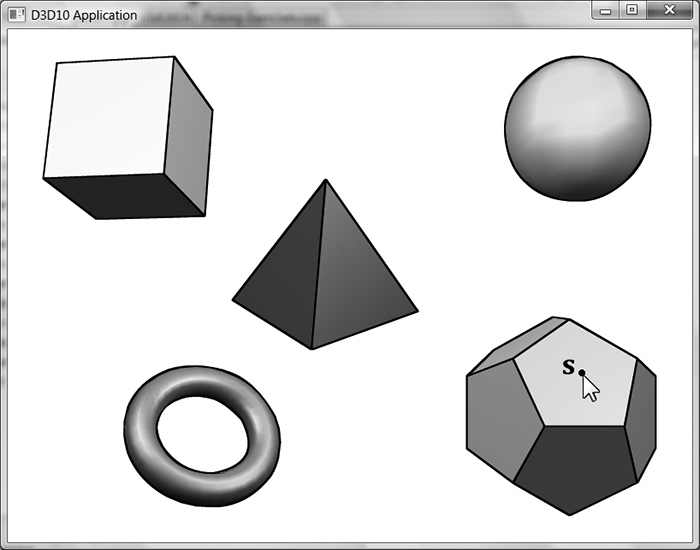
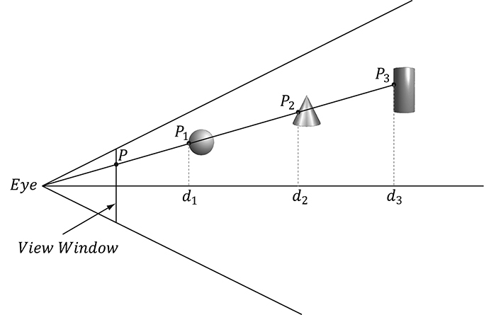
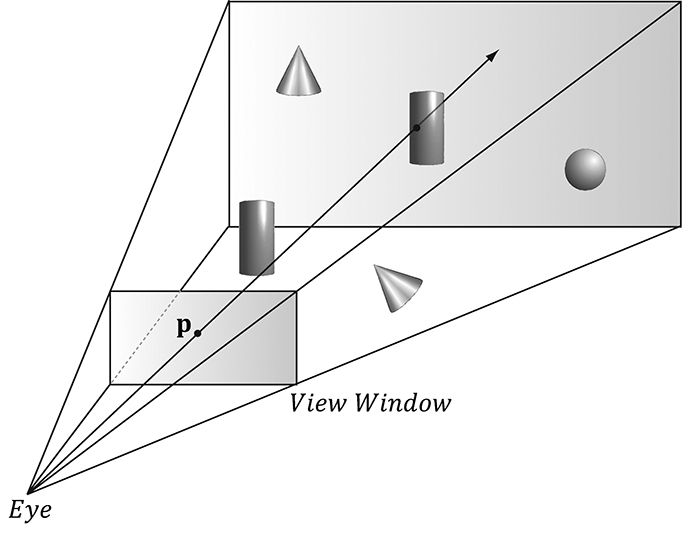
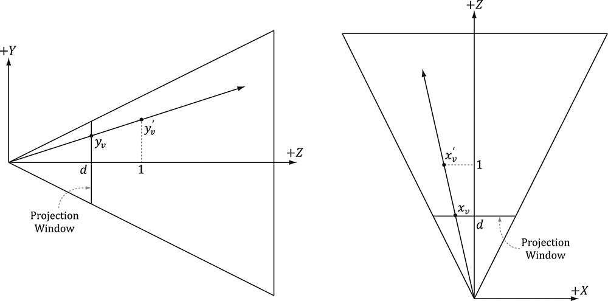
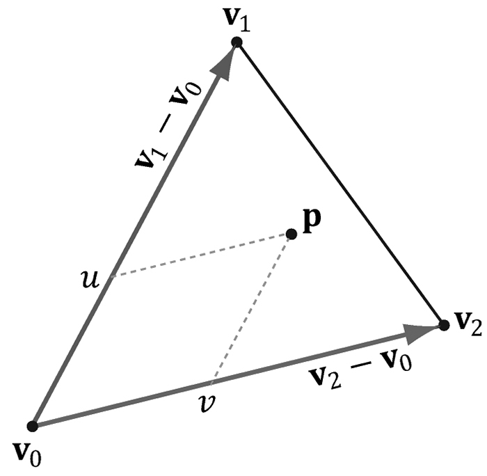
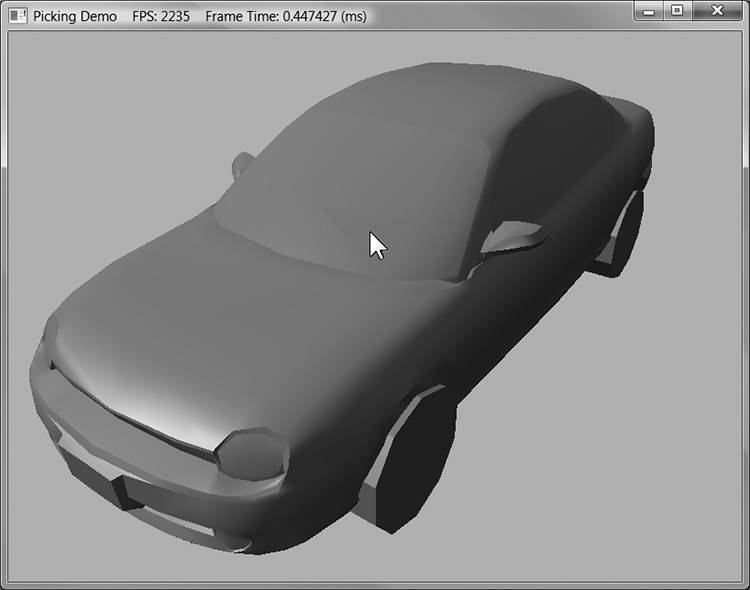

第三部分 · 进阶主题
对应示例：Picking Demo（鼠标点选骷髅）
本章学习目标（Objectives）
- 理解"点选物体"的数学原理：鼠标点 → 拾取射线；
- 把射线变换到物体本地空间做三角形求交；
- 给 demo 实现点击高亮选中的物体。
17.1 屏幕点 → 投影窗口（Screen to Projection Window Transform）
视锥从相机"眼睛"出发、穿过投影窗口延展——所以投影窗口上不同方向的射线会命中不同物体（书中 2D 侧视图解释）。先把鼠标坐标 (sx, sy) 从"屏幕像素+左上原点"换算到投影窗口 (x, y) ∈ [−1,1]×[−1,1]（y 翻转、除以宽高再线性映射），这正是视口变换的逆过程。
x = (+2sx/W − 1) / P00 ; y = (−2sy/H + 1) / P11
除以投影矩阵对角元素是因为射线还要"离开眼睛"（对应投影变换的逆）。
17.2 世界/本地空间拾取射线（World/Local Space Picking Ray）
- 射线表示：原点 o + 方向 d：p(t) = o + t·d (t≥0)；
- 拾取射线在视角空间：o = (0,0,0)（眼睛在原点）、d = (x, y, 1)（直指投影窗口）；
- 转世界空间：把视角矩阵的逆作用于原点与方向（点用 w=1，方向用 w=0——第 3 章的区分再次登场）；
- 转物体本地空间：再左乘该物体世界矩阵的逆——这样求交只用对"静态"的本地网格做一次，物体怎么转都能选。
17.3 射线与网格求交（Ray/Mesh Intersection）
遍历网格所有三角形，逐个做"射线 vs 三角形"测试（Möller-Trumbore 类算法）：用重心坐标 (u, v) 判定交点是否在三角形内且 t ≥ 0，取 t 最小者（最近的）。优化：先对包围球粗测（没打中球直接跳过网格），再测三角形。
// 伪代码框架 foreach mesh: if (!RaySphereIntersect(ray, mesh.boundSphere)) continue; foreach triangle: t = RayTriangleIntersect(ray, v0, v1, v2); if (t >= 0 && t < tNearest) { picked = mesh; tNearest = t; }
17.4 演示程序（The Demo Application）
Picking demo：场景里一排几何体，点击后命中的三角形被高亮成绿色（书中把命中三角形着色输出）。点击一次 = 上述全流程：屏幕坐标 → 射线 → 变换 → 求交 → 标记。
💡 读完做实验：改成"选中的整个物体变红"；把包围球画出来（线框球）验证粗测；加拖拽移动选中物体。
本章小结
- 拾取 = 鼠标点反投影成射线（眼睛 → 投影窗口方向）。
- 射线变换链：视角 → 世界（视图逆）→ 本地（世界逆），每步区分点与向量。
- 包围球粗测 + 三角形细测（重心坐标 + 最小 t）= 标准求交管线。
🖼️ 原书插图（6 张，点击展开）





